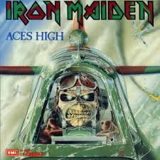

Historia Iron Maiden
Iron Maiden – heavymetalowy (reprezentujący New Wave of British Heavy Metal) zespół z Londynu, założony 25 grudnia 1975 roku, uważany za jeden z najwybitniejszych i najpopularniejszych zespół heavymetalowych w historii. Liderem grupy jest basista Steve Harris. Nazwa zespołu oznacza żelazną dziewicę.
Grupa słynie z Eddiego, maskotki-monstrum będącego protoplastą wielu mrocznych fantomów pojawiających się po 1980 r. na okładkach płyt zespołów metalowych na całym świecie. Eddie gościł na większości okładek albumów i singli Iron Maiden, jest również nieodłącznym elementem scenografii koncertów. Gadżety z wizerunkiem maskotki grupy sprzedano w milionowych nakładach. Zespół w swojej karierze sprzedał ponad 120 mln albumów, z czego niemal 90 mln z naklejką EMI Rec. Zespół posiada około 450 złotych i platynowych płyt oraz 35 srebrnych płyt. (Wydawane na całym świecie na licencjach wytwórni macierzystych).

Iron Maiden – heavymetalowy (reprezentujący New Wave of British Heavy Metal) zespół z Londynu, założony 25 grudnia 1975 roku, uważany za jeden z najwybitniejszych i najpopularniejszych zespół heavymetalowych w historii. Liderem grupy jest basista Steve Harris. Nazwa zespołu oznacza żelazną dziewicę.
Grupa słynie z Eddiego, maskotki-monstrum będącego protoplastą wielu mrocznych fantomów pojawiających się po 1980 r. na okładkach płyt zespołów metalowych na całym świecie. Eddie gościł na większości okładek albumów i singli Iron Maiden, jest również nieodłącznym elementem scenografii koncertów. Gadżety z wizerunkiem maskotki grupy sprzedano w milionowych nakładach. Zespół w swojej karierze sprzedał ponad 120 mln albumów, z czego niemal 90 mln z naklejką EMI Rec. Zespół posiada około 450 złotych i platynowych płyt oraz 35 srebrnych płyt. (Wydawane na całym świecie na licencjach wytwórni macierzystych).